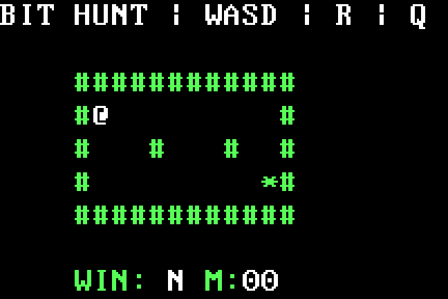

Return an exit code
A short Linux syscall payload returns decimal 42. Inspect the syscall number, status register, and expected process exit status.
EXAMPLES / ONE MECHANISM AT A TIME
Twenty-one experiments with actual literal sources, byte tables, and reproducible checks. Choose the execution environment first, then follow what each byte does.
ELF anatomy: inspect headers, segments and entry bytes →
01 / THE LINUX SYSCALL INTERFACE
These ELF files need Linux x86-64. Python adds a non-executable ELF container around the unchanged handwritten payload. Payload sizes below exclude that header. Expected nonzero exit statuses are part of the demonstrations.
A short Linux syscall payload returns decimal 42. Inspect the syscall number, status register, and expected process exit status.
Add values in a register, then expose the result through the process exit status. The byte table ties each immediate to the arithmetic.
Use the Linux write syscall with an explicitly encoded string address and length, then terminate through the exit syscall.
Follow a counter and a backwards relative branch. The displacement is authored in the literal bytes rather than resolved from a label.
Compare register values and use a conditional jump to select the result. Inspect which flag condition makes the branch happen.
A smaller handwritten exit-status payload beside the 12-byte baseline. Compare packed source sizes and encoding choices in the size lab; native Linux execution evidence is tracked separately.
02 / BEFORE AN OPERATING SYSTEM
Use legacy-BIOS x86 system emulation in QEMU. Smaller payloads are packaged into sectors; disk-read and monitor images also include a separately handwritten loader and padded second stage. They are not UEFI programs.
Segment and stack setup, BIOS text output, COM1 serial mirroring, message bytes, padding, and signature all appear in the canonical source.
Ask BIOS for a key and display the character. The emulated keyboard is a firmware service, with different behavior from a Linux syscall.
Store character and attribute bytes in VGA text memory. Inspect segment addressing and the difference between character data and its color attribute.
A separately handwritten loader and payload demonstrate BIOS disk reads and a success message. Inspect the carry-flag error path in the source.
Read and edit a bounded command buffer, match commands, display help, and inspect memory within the documented monitor limits. This is an experiment, not a general debugger.
A separately loaded literal stage installs a GDT, enables 32-bit code, writes and reads actual RAM, and dispatches a software interrupt through an IDT gate. IRETD returns before the success halt. This runs in QEMU, beyond the browser's 16-bit model.
Nine commands expose bounded keyboard editing, actual RAM reads and writes, a register snapshot, and BIOS disk loading. The five-sector image combines the loader, shell and separately authored returning app. Its behavior has actual QEMU checks.
The shell loads this payload at physical 0x9000. It computes 7 × 6, stores the resulting byte 2A at 0x0601, prints that result and returns to the shell. This .bin is not independently bootable; use the shell image and its run command.
03 / DATA BECOMES AN INSTRUCTION
Initialize the stack before the BIOS call, store 61 over a future MOV operand containing 41, jump to it, and emit lowercase a. A separate literal one-bit control emits A. QEMU verifies code RAM, serial and VGA; the source file and read-only image stay unchanged.
04 / BYTES BECOME PIXELS
Eight authored rows draw a native letter. One DAC operand bit changes its green component while all 64,000 framebuffer indices stay identical. The GIF crops actual screens from two separate boots; the browser CPU model rejects this graphics mode.

05 / A SMALL ARENA
Five calls reserve bytes from a sixteen-byte arena. Change the third request from 13 to 12 and the next one-byte call succeeds. Two separate QEMU boots verify the native-written RAM logs, zero and wrap rejection, both guards and unchanged code. These are native final halt snapshots. The CPU lab can run both sources with the same logs and guards; its recorded rewind is a separate model check.
13-byte request: [2000,2003) [2003,2010) 12-byte control: [2000,2003) [2003,200F) [200F,2010)
06 / THE MACHINE INTERRUPTS
Literal PIC/PIT setup delivers IRQ0 to a protected-mode gate. The handler records the actual saved frame, sends EOI and returns with IRETD. One count bit changes three entries to two. One EOI port bit leaves the first IRQ in service and a later request pending. Final QMP snapshots include both log guards; this is no browser hardware simulation or timing benchmark.
Program: 3 entries, masked final halt Count bit: 2 entries, third slot empty EOI port bit: 1 entry, ISR0 + pending IRQ0
This 1536-byte disk includes the separately handwritten loader. The payload alone is not bootable and exceeds the CPU lab's 512-byte input bound.
07 / A PAGE SAYS NO
Literal instructions build two page structures and enable supervisor write protection. A read-only page rejects the store: error 3, CR2=B000, original EIP=7C99. The native handler repairs PTE.RW, invalidates the translation and returns to the same store. Both complete structures and the retained frame are captured from QEMU.
Protected: 1 fault, repair, retry → 42 PTE RW bit: 0 faults, writable page CR0 WP bit: 0 faults, page still read-only
The CPU lab model stops at LGDT before paging setup. This proves a controlled supervisor fault; user-mode isolation and browser paging remain unsupported.
08 / ONE SHARED FRAME
One shared handler records divide error, breakpoint, invalid opcode and selector general protection. Stubs normalize the presence or absence of a CPU error code. IRETD preserves the seeded registers and direction flag; the breakpoint keeps its already-advanced EIP. Eighteen legacy gates are mapped, but only these four vectors have native delivery proof.
Program: DE, BP, UD, GP → return Divisor bit: BP, UD, GP → return Stop bit: 1 DE, retained context Retry bit: 4 records; fifth entry stops
The 1536-byte disk uses the handwritten loader. This native payload exceeds the CPU lab's 512-byte input bound; its literal prefix stops at LGDT. General recovery, privilege-changing frames and modern vectors are not claimed.
09 / A STAR INSIDE 492 BYTES
Move the white @ with WASD, dodge walls and collect the star. R restarts; Q quits. One goal-operand bit makes the same route finish with WIN: N. Actual keyboard input drives both boots; VGA, counters, guards and immutable code/map bytes have native checks, including 260 moves that saturate at FF.

Same route, same cell, 11 moves Program: WIN Y · goal bit: WIN N WASD moves · R resets · Q quits
The GIF contains twenty actual QEMU frames from two boots, cropped and enlarged without overlays. Its pacing explains states, not native timing. Both sources fit the CPU lab import bound but stop at unsupported C6 after fourteen setup steps; the model does not emulate this game.